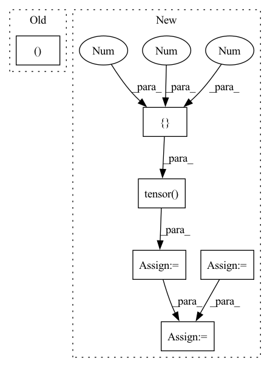

Pattern ID :6609

Before Change
normalization = None
bias = True
x, edge_index = create_mock_data(node_count, edge_per_node, node_features)
model = ASTGCN(nb_block, node_features, K, nb_chev_filter, nb_time_filter, nb_time_strides, num_for_predict,
len_input, node_count, normalization, bias).to(device)
model2 = ASTGCN(nb_block, node_features, K, nb_chev_filter, nb_time_filter, nb_time_strides, num_for_predict,
After Change
Testing ASTGCN block and its component ChebConvAttention with changing edge index over time or not
in_channels, out_channels = (16, 32)
batch_size = 3
edge_index = torch.tensor([[0, 0, 0, 1, 2, 3], [1, 2, 3, 0, 0, 0]])
num_nodes = edge_index.max().item() + 1
edge_weight = torch.rand(edge_index.size(1))
x = torch.randn((batch_size, num_nodes, in_channels))
attention = torch.nn.functional.softmax(torch.rand((batch_size, num_nodes, num_nodes)), dim=1)
conv = ChebConvAttention(in_channels, out_channels, K=3, normalization="sym")
out1 = conv(x, edge_index, attention)
assert out1.size() == (batch_size, num_nodes, out_channels)
out2 = conv(x, edge_index, attention, edge_weight)
assert out2.size() == (batch_size, num_nodes, out_channels)
out3 = conv(x, edge_index, attention, edge_weight, lambda_max=3.0)
assert out3.size() == (batch_size, num_nodes, out_channels)
In pattern: SUPERPATTERN
Frequency: 3
Non-data size: 6
Instances
Fragment ID: 22942047
Project Name: benedekrozemberczki/pytorch_geometric_temporal
Commit Name: 8b1490d5dcc9cfa91cbb7f7d44990f7d9e117984
Time: 2021-03-26
Author: He_YX@outlook.com
File Name: test/convolutional_test.py
M Class Name: AnonimousClass
N Class Name: AnonimousClass
M Method Name: test_astgcn(0)
N Method Name: test_astgcn(0)
M Parent Class:
N Parent Class:
M File Name: test/convolutional_test.py
N File Name: test/convolutional_test.py
M Start Line: 104
M End Line: 122
N Start Line: 104
N End Line: 118
'>
Before Change
assert torch.abs(output_heatmap[center_x+5, center_y] - output_heatmap[center_x-5, center_y]) < 1e-10
def test_focal_loss(self):
sample_output = torch.rand((10,self.OUTPUT_SIZE,self.OUTPUT_SIZE))
output_probs = torch.sigmoid(sample_output)
sample_target = [render_gaussian_kernel(torch.zeros(self.OUTPUT_SIZE,self.OUTPUT_SIZE),64,64,10,20) for _ in range(10)]
After Change
centers = torch.tensor([[10,10], [20,30], [14,30]])
sizes = torch.tensor([[10,10], [10,20], [30,30]])
indices = torch.tensor([1,0,2])
mask = torch.tensor([1,1,0])
sample_target = render_target_heatmap(self.HEATMAP_SHAPE, centers, sizes, indices, mask)
focal_loss = FocalLossWithLogits(alpha=2, beta=4)
loss1 = focal_loss(sample_output, sample_target)
'>
Fragment ID: 22942011
Project Name: gau-nernst/centernet-lightning
Commit Name: ec606be569e9df24f7e5c15bef3581b86a63d881
Time: 2021-05-31
Author: gau.nernst@yahoo.com.sg
File Name: losses_test.py
M Class Name: TestLosses
N Class Name: TestLosses
M Method Name: test_focal_loss(1)
N Method Name: test_focal_loss(1)
M Parent Class:
N Parent Class:
M File Name: losses_test.py
N File Name: losses_test.py
M Start Line: 20
M End Line: 27
N Start Line: 21
N End Line: 34
'>
Before Change
def get_interpolator(self):
evaluate the interpolation function.
x, y, z = get_grid(self.atom_coords)
def func(x):
return self(x, one_elec=True).squeeze(1)
After Change
evaluate the interpolation function.
xpts = logspace(n, length)
nxpts = len(xpts)
grid = np.stack(np.meshgrid(
xpts, xpts, xpts, indexing="ij")).T.reshape(-1, 3)[:, [2, 1, 0]]
grid = torch.tensor(grid)
def func(x):
nbatch = x.shape[0]
xyz = x.view(-1, 1, 1, 3).expand(-1, 1, self.nbas, 3)
r = torch.sqrt((xyz**2).sum(3))
R = self.radial(r, self.bas_n, self.bas_exp)
Y = self.harmonics(xyz)
bas = R * Y
bas = self.norm_cst * self.bas_coeffs * bas
ao = torch.zeros(nbatch, self.nelec,
self.norb, device=self.device)
ao.index_add_(2, self.index_ctr, bas)
return ao
data = func(grid).detach().numpy()
data = data.reshape(nxpts, nxpts, nxpts, -1)
self.interp_func = [RegInterp((xpts, xpts, xpts),
data[..., i],
'>
Fragment ID: 22943092
Project Name: nlesc-jcer/qmctorch
Commit Name: 7cfb514524df67f6b1b553207580f79b5dbf21a9
Time: 2020-05-13
Author: nicolas.gm.renaud@gmail.com
File Name: qmctorch/wavefunction/atomic_orbitals.py
M Class Name: AtomicOrbitals
N Class Name: AtomicOrbitals
M Method Name: get_interpolator(3)
N Method Name: get_interpolator(1)
M Parent Class: nn.Module
N Parent Class: nn.Module
M File Name: qmctorch/wavefunction/atomic_orbitals.py
N File Name: qmctorch/wavefunction/atomic_orbitals.py
M Start Line: 275
M End Line: 283
N Start Line: 280
N End Line: 310